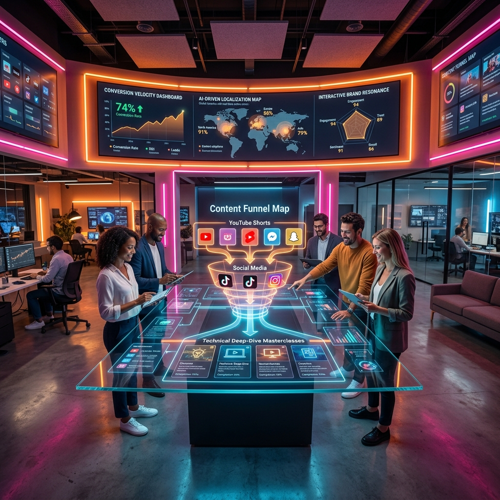

How to Boost Your Video Marketing Strategy

The video marketing landscape in 2026 is no longer about "broadcasting" a generic message; it is about "crafting" a personalized, omnichannel experience that breathes with the user.
We have moved past the era of the static "Commercial Spot" and into the era of the "Interactive Content Journey." In this high-velocity digital world, consumers don't just want to watch a video; they want to engage with a brand's narrative across multiple platforms, formats, and screens. For the modern marketer, success is defined by the ability to orchestrate a seamless flow from high-awareness shorts to deep-dive educational streams and real-time live-decision events. This comprehensive guide explores the core strategies of 2026 and examines how you can build a video marketing engine that achieves high-impact results in a fragmented attention economy.
The Multi-Format Funnel: Shorts, Lives, and Deep-Dives
In 2026, the marketing funnel has been reimagined as a "Multi-Format Loop." High-velocity YouTube Shorts and TikToks serve as the primary "Awareness Layer," capturing initial interest through visual dopamine hits and ultra-concise value propositions. However, the real "Conversion Engine" lies in the subsequent layers of the funnel: the long-form tactical deep-dive and the interactive live stream. A successful marketer doesn't just hope for a viral short; they build a content pipeline that guides the initial "Lead" from a 15-second visual hook to a 10-minute authority video.
The key to mastering this funnel is "Consistent Value Propagation." The core message of your viral short must be logically expanded in your long-form content. For example, a "30-second tip" on a product's primary feature should lead directly to a "10-minute masterclass" showing how to integrate that product into a complex workflow—perhaps using a multi-screen setup like YoutubeMulti for monitoring performance. By providing a clear and high-value path through your content ecosystem, you build trust and authority that a simple "Buy Now" ad can never achieve. In 2026, the funnel is about the "Relationship Velocity," not just the "Click Velocity."
Interactive Storytelling: Engaging the Viewer in Real-Time Decision Making
One of the most powerful strategies in 2026 is "Interactive Storytelling." We are moving toward a world where the viewer is an active participant in the brand narrative. Using platform-native interactive tools (like live polls, linked-node narratives, and community co-creation events), marketers can allow the audience to "choose" the direction of a video or the outcome of a product demo. This level of participation creates a "Narrative Ownership" that results in significantly higher engagement rates and lower drop-off frequencies.
Imagine a live stream where a brand's lead engineer builds a custom Ops Center for a viewer in real-time, based on live poll results from the community. Or a multi-path video guide where the user chooses their specific "Business Use Case" and is directed to a personalized technical deep-dive. This "Active Choice" engagement is particularly effective in high-stakes niches like B2B Tech, Law, and Finance. By making the viewer a part of the solution, you transform a potentially passive interaction into a memorable brand experience. Interactive storytelling is the ultimate protection against "Ad-Blindness."
AI-Driven Personalization: Tailoring Your Message to Global Segments
In 2026, the concept of a "Global Audience" is officially a collections of "Micro-Segments." AI-driven localization and personalization tools now allow marketers to tailor their visual and audio messages to specific regional and demographic narratives in real-time. Whether it's voice-cloning for high-accuracy translation into Polish or AI-generated "Visual Swaps" to match a specific cultural context, the goal is to make every viewer feel that the content was designed specifically for *them*.
For the marketer, this means focusing on "Modular Content Design." Your core "Value Proposition" should be fixed, but the "Presentation Layer" (the examples used, the cultural references, the language) should be dynamically adjustable. By utilizing AI to localize your highest-performing assets, you can achieve global reach with local emotional resonance. The algorithm is particularly fond of "Localized High-Authority" content, often suggesting well-translated and culturally-aligned technical guides to users who would have otherwise missed the original primary video. Personalization is the key to global "Search Dominance."
Measuring 'True Impact': Beyond Likes and Views to Conversion Velocity
In the data-rich environment of 2026, many marketers are still relying on "Vanity Metrics" like likes and basic view counts. However, the most successful brands are focusing on "Conversion Velocity"—the speed and depth with which a viewer moves through the content funnel toward a tangible business goal (e.g., a newsletter sign-up, a product trial, or a community membership). Measuring the "Net Satisfaction" of your viewers through sentiment analysis and survey data provides a far more accurate picture of your brand's true ROI.
To truly understand your "Video Impact," use advanced monitoring setups to track the "Global Narrative" around your brand. Imagine a "Brand Intelligence Dashboard" using YoutubeMulti: Tile 1 for your own latest marketing video. Tile 2 for a live social media feed tracking your brand's hashtag. Tile 3 for a competitor's recent product launch. Tile 4 for a live a live "News Sentiment" ticker from reputable global outlets. This "Multi-Focal Intelligence" allows you to see how your marketing message is being received in the context of the broader industry. Real impact is measured in the "Resonance" of your brand, not just the "Reach."
The Future of Video: Decentralized Platforms and Augmented Reality
As we look toward 2027 and beyond, the future of video marketing is inextricably linked to "Immersive Experiences." We are moving toward a world where "Virtual Product Demos" are the norm, featuring AR (Augmented Reality) overlays that allow viewers to "see" a digital product in their own environment. YoutubeMulti is already provide a foundation for this future, allowing fans to build their own bespoke "Spectator Grids" and multiscreen dashboards. This immersive future is about making the "Brand Presence" as real as the physical world.
Using YoutubeMulti to Monitor Global Brand Sentiment and Competitor Moves
For the strategic marketer, having total situational awareness of the competitive landscape is non-negotiable. Using YoutubeMulti to build a "Marketing Operations Center" allows you to:
- Analyze Competitor Funnels: Monitor how your competitors are linking their shorts to their long-form content and identify gaps in their strategy.
- Track Cultural Trends: Keep an eye on high-velocity viral trends across different regions (like Poland vs. the USA) to see which messaging is currently resonating.
- Monitor Live Reactions: Watch live unboxings and reviews of your products (and your competitors') in real-time tiles to understand the raw community verdict.
- Refine Your Strategy: Use the multi-stream intelligence to decide if a "Strategic Pivot" is needed for your next campaign.
Conclusion: Final Thoughts on the Omnichannel Approach
The 2026 world of video marketing is a sophisticated puzzle of technology, psychology, and narrative. It is no longer enough to just "post a video"—you must "manage a journey." By utilizing advanced strategies like interactive storytelling and AI personalization, and by using professional tools like YoutubeMulti to monitor your performance, you can ensure that your brand stands out in the crowded high-velocity digital arena. Don't just broadcast—interact, personalize, and build your omnichannel marketing legacy today. The era of total brand awareness starts now.